”Käytin tätä koko 12 viikon kyykkyjakson ajan. Pitää yhä muotonsa ja näyttää uudelta. Collegekankaan paksuus on oikeasti kova juttu.”
Marcus D.
Kyykky 230 kg
- Käyttää
- Club Hoodie, musta, L
- Mitat
- 183 cm, 96 kg
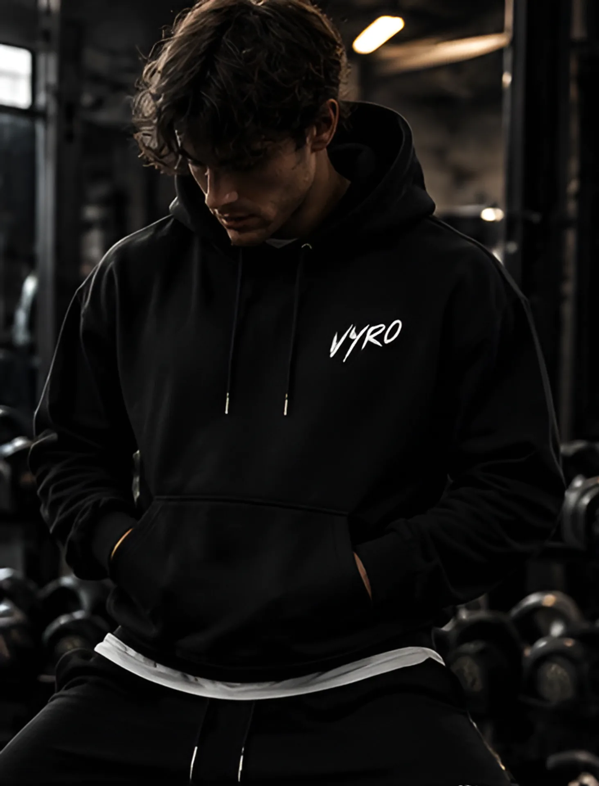
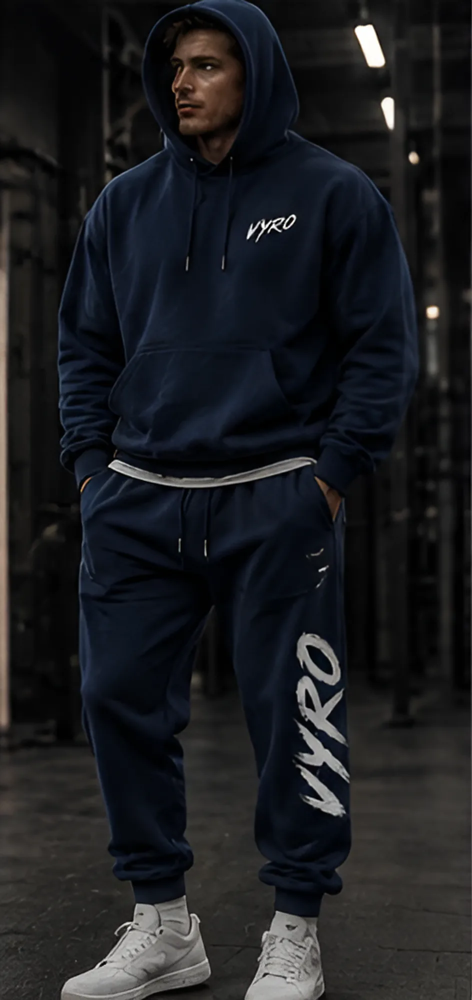
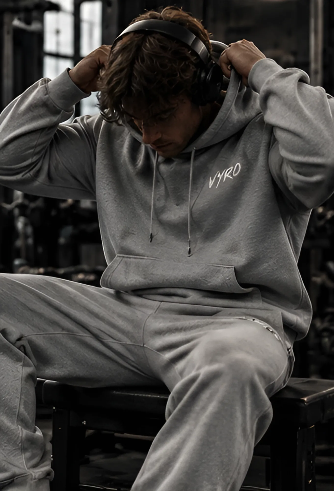
Drop 01 on täällä. Hupparit, collegehousut, t-paidat, hihattomat ja shortsit mustana, tummansinisenä ja harmaana. Leikattu treenaajille, jotka tulevat saliin joka päivä.
Vaatteet yhtä kovaa kuin sinun treenisi.
Drop 01 siellä, minne se on tehty. Jokainen tuote ja jokainen väri samassa huonossa valaistuksessa, jossa sinäkin treenaat.
Athletics Club Hoodie. Raskas harjattu collegekangas, pudotettu olkasauma ja laatikkomainen malli. Pieni sivellinvedon VYRO rinnassa ja koko klubimerkki selässä.
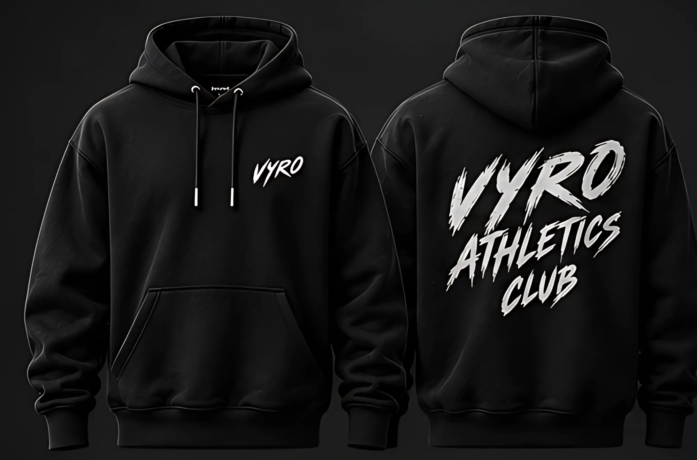
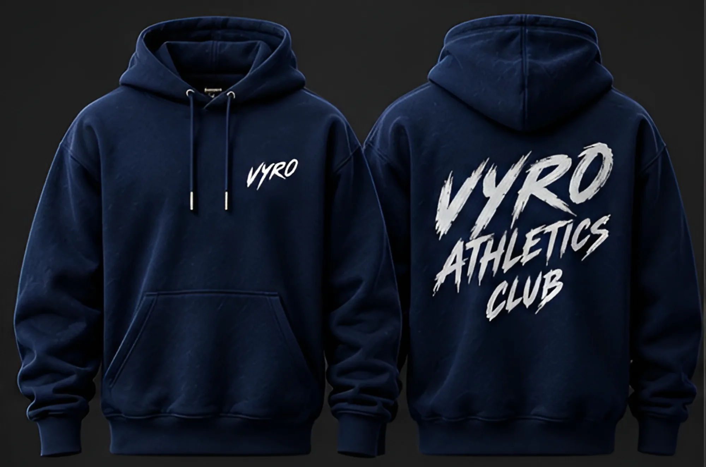
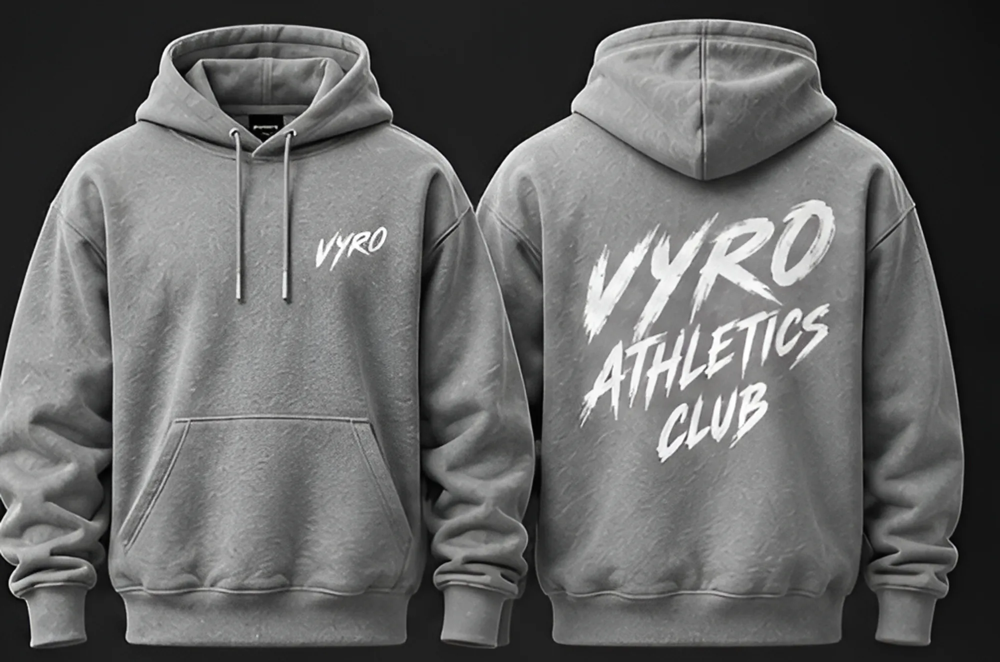
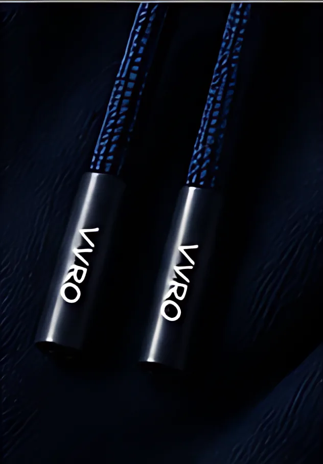
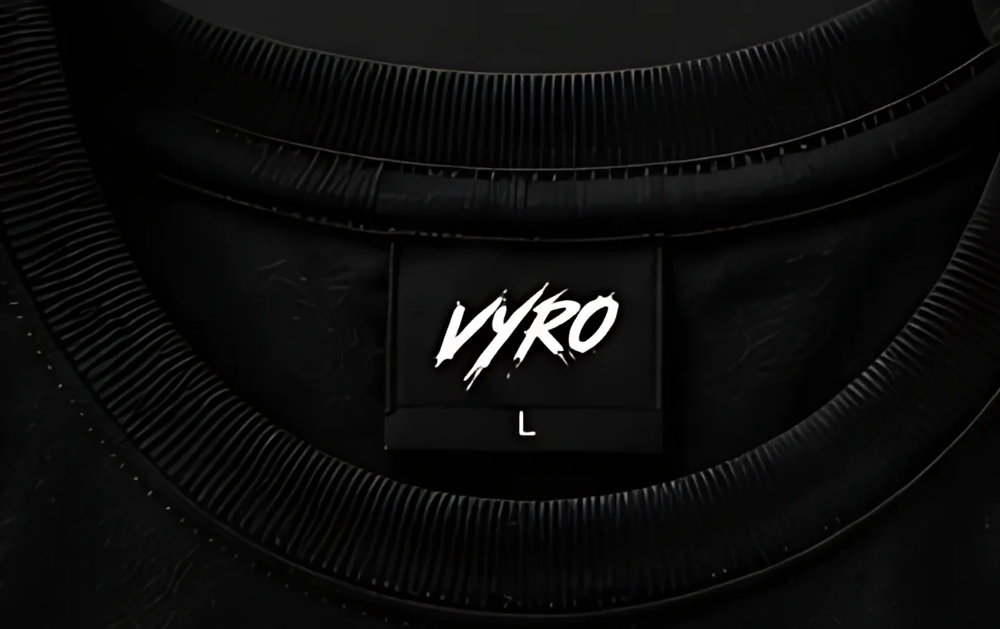
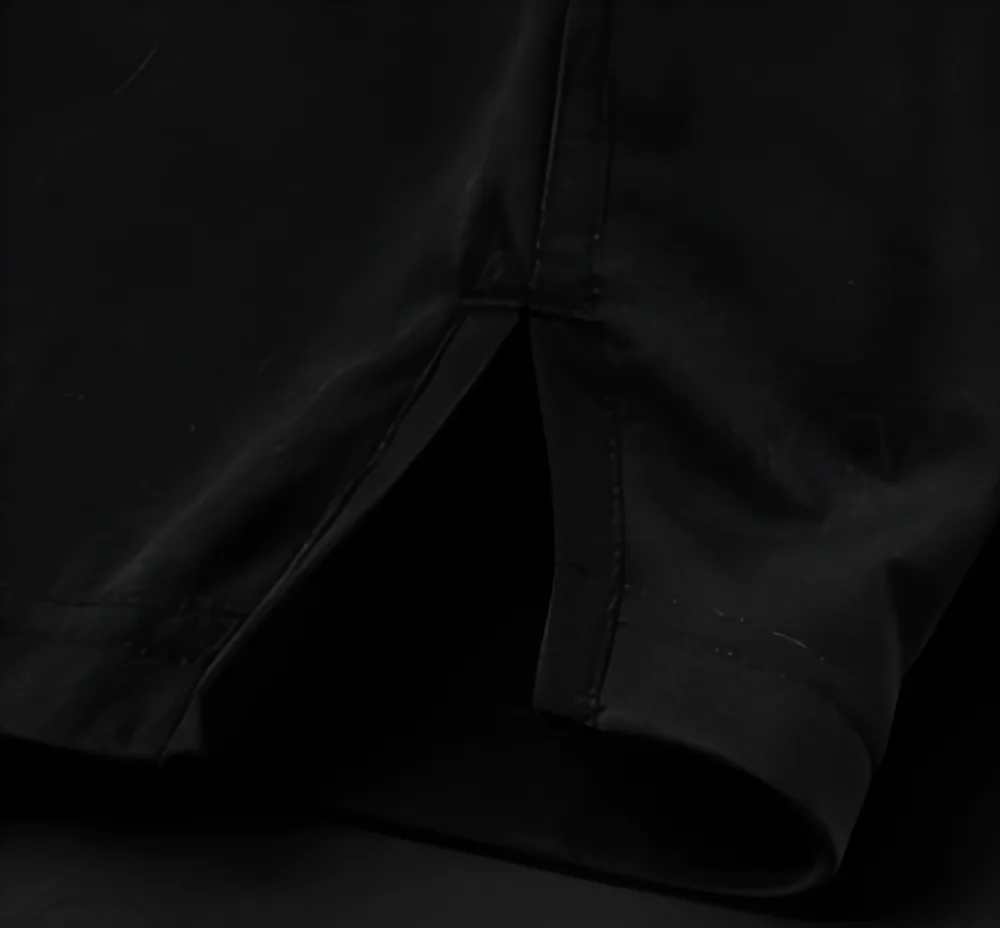
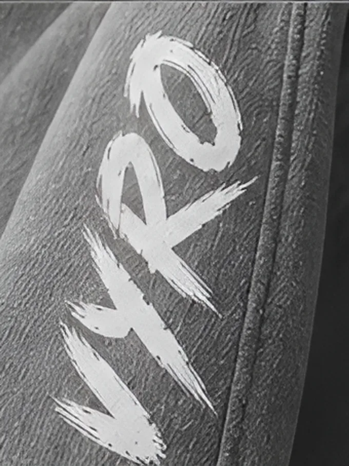
Viisi tuotetta. Kolme väriä. Yksi rajattu erä, sitten se on poissa.
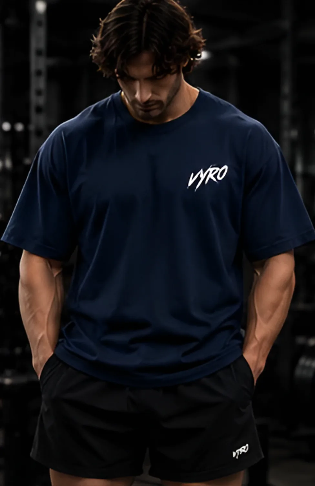
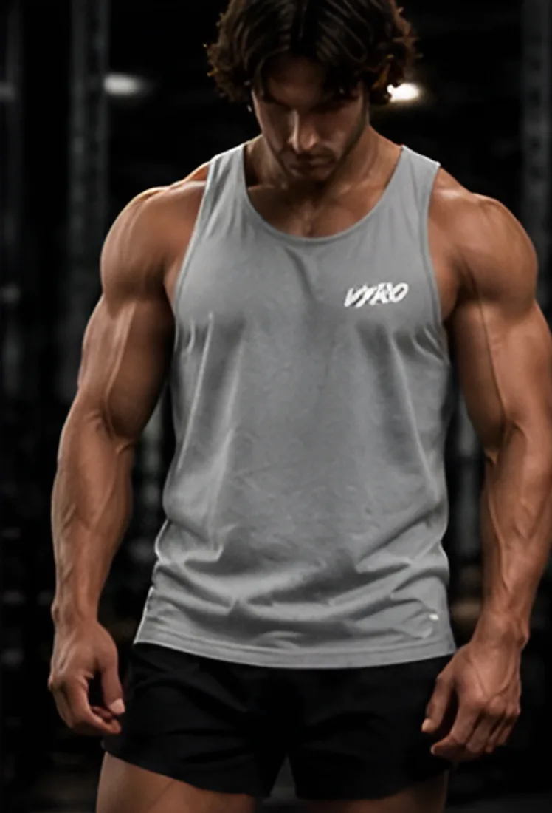
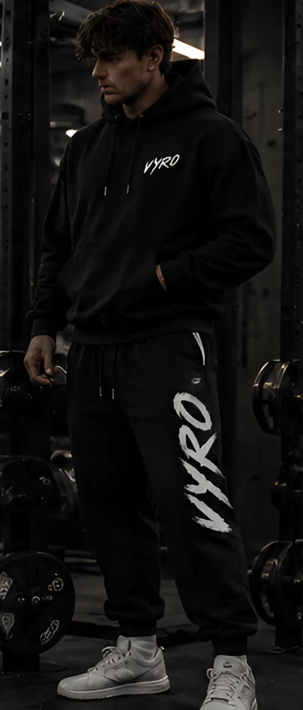
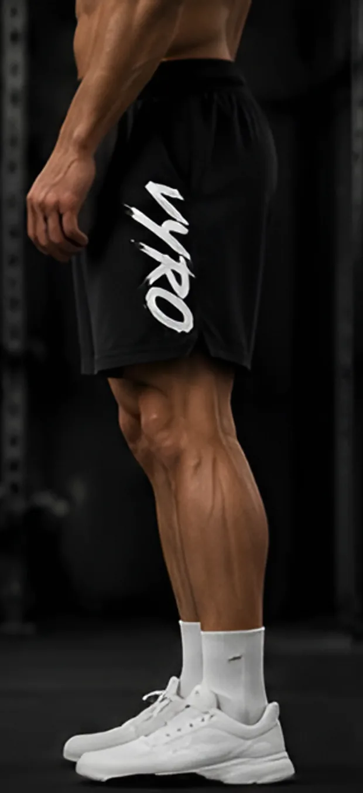
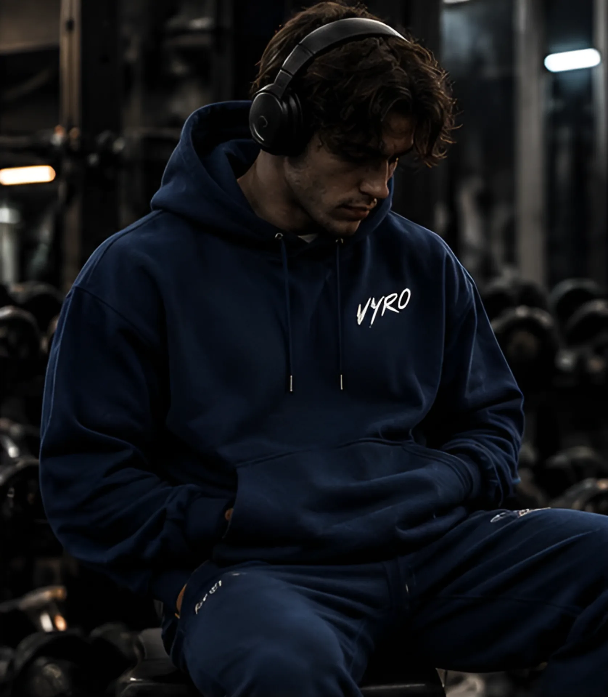
Kukaan ei taputa kello 5.40. Sinä treenaat silti.
VYRO syntyi autotallisalilla, jossa oli kyykkyteline, huono lämmitin ja yksi sääntö: maanantaita ei jätetä väliin. Emme löytäneet treenivaatteita, jotka näyttivät yhtä vakavilta kuin niiden käyttäjät, joten teimme omat.
Jokainen tuote on raskasta kangasta, leikattu treenaajan vartalolle ja testattu tangon alla ennen kuin se lähtee myyntiin. Yksi sivellinvedon merkki, ei äänekkäitä iskulauseita eikä oikoteitä kankaassa. Pumpin ansaitset itse. Vaatteiden pitää vain pysyä mukana.
Arvioita treenaajilta, jotka ovat treenanneet Drop 01 -vaatteissa. Mukana istuvuushuomiot, jotta koko osuu kohdalleen heti ensimmäisellä kerralla.
”Käytin tätä koko 12 viikon kyykkyjakson ajan. Pitää yhä muotonsa ja näyttää uudelta. Collegekankaan paksuus on oikeasti kova juttu.”
Marcus D.
Kyykky 230 kg
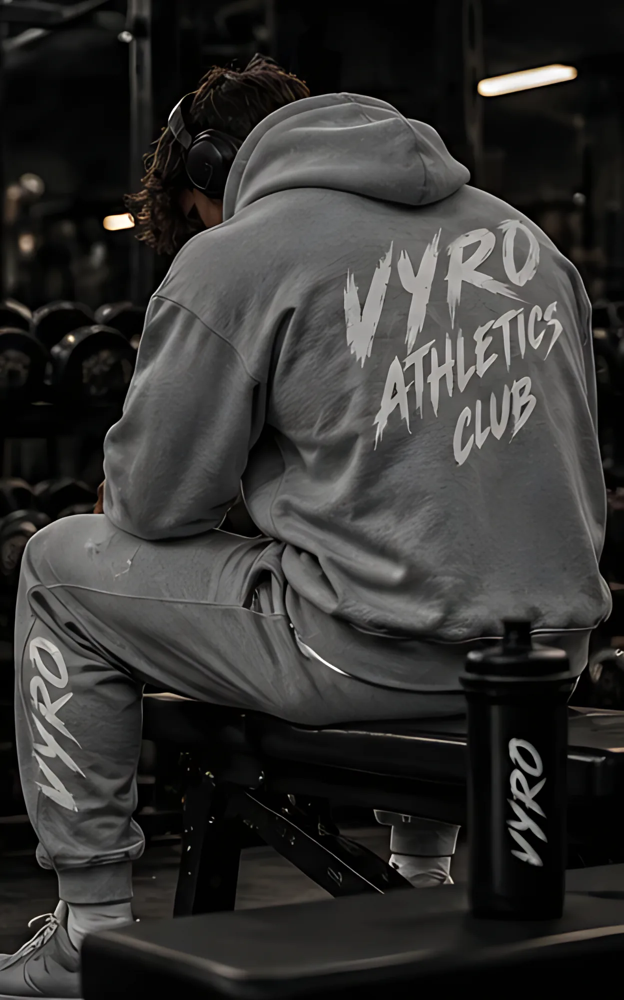
”Lahjepainatuksesta kysytään ensimmäisenä. Tilaa reisissä, tiukka nilkasta, eikä valahda treenin loppuun mennessä.”
Jonah R.
Penkki 160 kg
”Tummansininen on hienoin vaatteeni, salilla tai ei. Malli on iso, joten ota kokoa pienempi, jos haluat vähemmän väljän.”
Theo K.
Maastaveto 280 kg
”Ostin koko mustan setin. Tarpeeksi lämmin kylmälle salille eikä kiristä kyykyn pohjalla. Tilasin harmaan viikkoa myöhemmin.”
Andre M.
Etukyykky 170 kg
Dropit myydään loppuun. Saat sähköpostin heti, kun seuraava julkaistaan, ja pääset ostoksille 24 tuntia ennen muita.